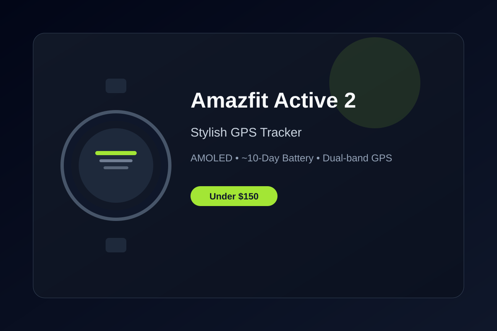

Amazfit Active 2 Review: Stylish Design and GPS Under $150
The Amazfit Active 2 blends a premium-looking stainless steel case with practical fitness features, built-in GPS, and multi-day battery life at a budget price.
Budget smartwatches frequently look the part of a compromise, but the Amazfit Active 2 pushes back against that expectation. Often available well under $100 and always under $150, it pairs a stainless-steel case and bright AMOLED display with the core tracking tools most people actually use day to day.
The 1.32-inch AMOLED screen stands out for its brightness and clarity. Outdoor readability is strong, and the interface responds quickly enough that scrolling through stats or changing faces never feels laggy. Combined with the lighter overall build, the watch stays comfortable for all-day wear without the bulk of larger models.
Fitness and health tracking cover the expected bases and then some. Continuous heart rate, SpO2, sleep stages, stress, and over 160 workout modes are included, along with dual-band GPS and offline maps support. For runners and walkers who want reliable location data without carrying a phone the whole time, this is a meaningful upgrade over basic trackers.
Battery life typically reaches around 10 days with normal use, which removes the daily charging ritual that higher-end smartwatches often require. Bluetooth calling and notification handling work reliably when your phone is nearby, and the companion Zepp app handles syncing without excessive friction. Software support has been steady for Amazfit’s recent lineup.
If you want a smartwatch that looks more expensive than it costs, tracks workouts accurately enough for everyday training, and lasts more than a week between charges, the Amazfit Active 2 is one of the stronger picks currently available under $150.
Key Takeaways
- Price Range: ~$80 – $100 (Amazon)
- Display: 1.32-inch bright AMOLED
- Battery: Up to ~10 days typical use
- Features: Dual-band GPS, offline maps, 160+ sports modes, Bluetooth calling